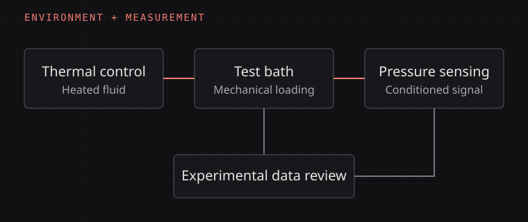

Medtronic Aortic / Test development & instrumentation
Instrumented Fatigue Testing.
Integrated temperature control, pressure sensing, and mechanical testing to develop more useful benchtop fatigue experiments.

Engineering problem
A fatigue result is only useful when the test environment and measurement chain are understood. Heated fluid, pressure, fixturing, and mechanical loading needed to work together in a controlled benchtop setup.
My contribution
I developed and refined test methods, custom fixtures, and instrumentation for aortic-device component testing. My work included pressure-transducer integration, signal conditioning, heated-fluid temperature control, and equipment-readiness documentation.
Technical approach
Instrument the environment
Integrated pressure transducers and signal conditioning, and used PID temperature control for heated-fluid testing.
Connect the method to the hardware
Worked with Bose ElectroForce systems and WinTest to align fixtures, loading, and environmental measurements with the intended test.
Investigate the evidence
Used structured experiments, imaging, and data analysis to investigate anomalies and distinguish setup effects from component behavior.
Result
Thermal + pressure
instrumentation integrated with fatigue testing
Established an instrumented experimental setup and repeatable documentation to support fatigue-method development and engineering review. Contributed to installation qualification on ElectroForce equipment.
Internal operating settings, specimen geometry, failure data, and device-performance conclusions are intentionally omitted.
Lessons learned
A test setup is a measurement system. Environmental drift, fixture behavior, and sensor integration deserve the same attention as the loading profile before the data can support a design decision.
Continue exploring
Portable Stroke Detection